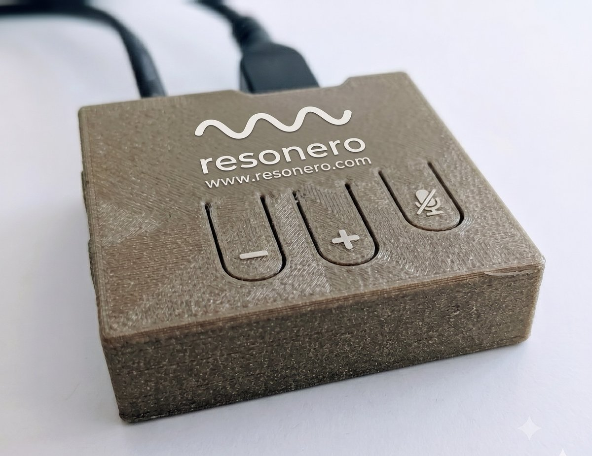
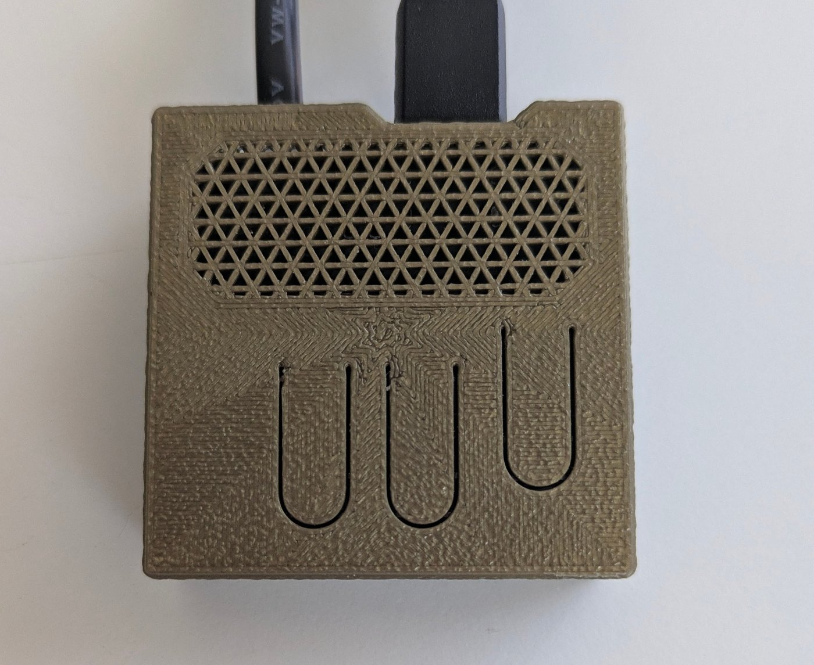

Eric Falkenburg has been working on this problem for five years. Here is where it started, what he found, and why it matters.
For years, Eric sang off-key without realizing it. Not because he couldn't hear music — he could follow every emotional nuance in a recording, track harmony, feel rhythm. But when he listened to recordings of himself, something was wrong. He sounded whiny. Nasal. Pedantic. The gap between what he intended and what people heard was real, persistent, and unexplained.
This was not a problem with effort or attention. It was a problem with information. He was receiving a distorted picture of what he was actually producing.
Knowpitch was the first iteration: a headphone-based system that delivered clear pitch information directly to the listener. No app. No training. No mode to enter. Just accurate intonation melody, delivered acoustically, in real time.
The shift was immediate. With clear information about what he was actually producing, Eric could shape his voice toward what he intended. The gap closed — not through practice or technique, but through better information.
The headphones were a proof of concept. But headphones had a problem: you cannot wear them in normal conversation without changing the conversation.
The deeper realization was this: the problem isn't only about singing. Intonation melody is what carries emotional meaning in all speech — not just music. And it isn't only a speaker's problem.
Listeners are also reconstructing intonation melody from incomplete signal, automatically, invisibly, and often wrongly. The same physical mechanism that makes speakers sound different from how they feel also makes listeners hear something different from what was meant.
Solving for one solves for both — simultaneously, in the same room, with the same device.
One early user was a student with a genuinely expressive voice — warm, nuanced, clearly capable of emotional range. But in conversation, none of that came through. People heard something flat, or odd, or hard to read. She had been managing this for years: speaking more carefully, over-explaining, avoiding situations where she'd be misread.
With Resonero in the room, she finally sounded like herself. Not because something was fixed. Because something that had always been missing was now present.
This is enabling, not recuperative. Resonero provides something that was never previously there — not a restoration. For people who have never experienced clear intonation in normal conversation, it is a new room, entered for the first time.

control face — vol− · vol+ · mute

speaker grille face
The headphone solution proved the mechanism. But normal conversation doesn't accommodate headphones. The next five years were spent solving for ambient delivery: getting intonation melody into the room acoustically, invisibly, without requiring any change in behavior from the people in it.
The result is a two-component device on a cable — processor and speaker — that sits on a shelf or desk and does its work without being noticed. Almost nothing to see. Nothing to manage. The design matured until the technology disappeared.
Sonic and visual invisibility are not constraints Resonero works around. They are the design goal. Augmentation that announces itself changes the conversation it's meant to help. Resonero is present the way good acoustics are present: you notice the room feels different, not that something is doing the work.
Early users describe conversations where no one mentioned the device. They just noticed the conversation felt easier.
On the name. The device was called Resonero — and still is. Earlier it was also known briefly as Social Resonance. We loved Resonero for good reasons: the acoustic effect feels like the room is warmly resonating with people's voices and feelings, and it helps people resonate with each other. When we discovered the Love Your Voice concept — ame (love) + voca (voice) — it captured something the name needed to say about aspiration, not just experience. Both names were right about different things. The room still resonates.
Eric Falkenburg is a researcher, educator, and founder. Resonero is the product of five years of personal refinement, built independently without outside funding. The team — Eric, Steve, Peter, Susan, Natasha, and Keith — operates from El Paso.
The company name is Freudensong: a word for a song of joy. The product name is Resonero: a name that captures how the room resonates warmly with people's voices and feelings — and how people resonate with each other.
| founder | Eric Falkenburg |
| company | Freudensong LLC |
| location | El Paso, TX |
| funding | bootstrapped / made-to-order |
| patent | filed |
| contact | info@resonero.com |
our first advertisement — made when the device was called resonero. re-labelled version coming.